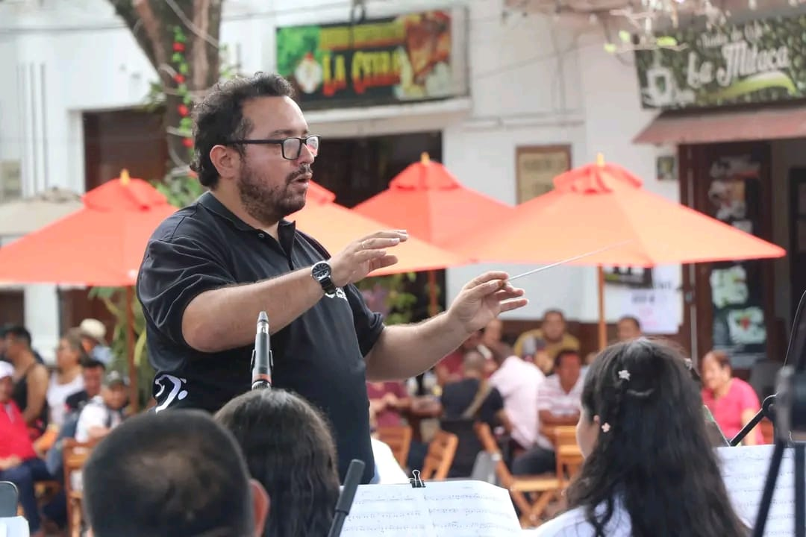
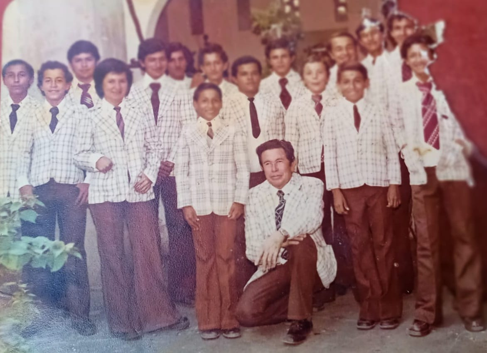
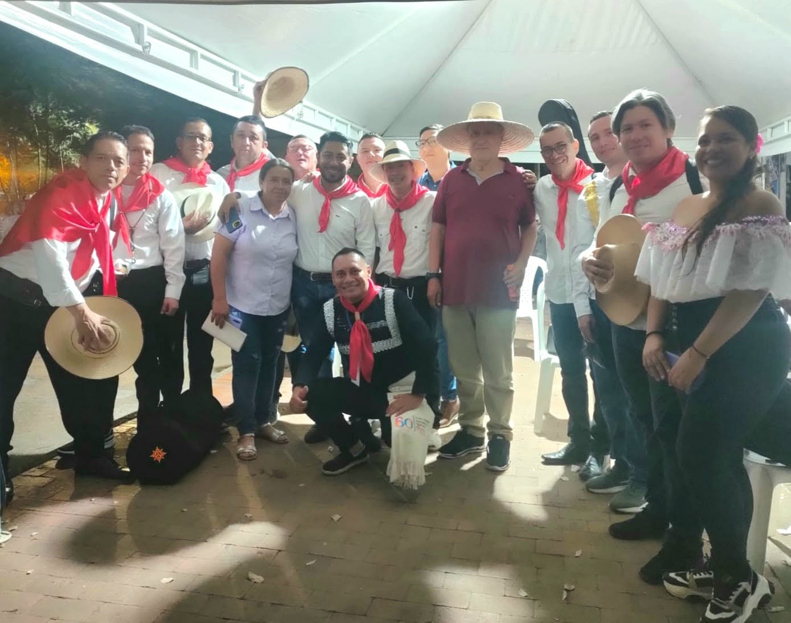
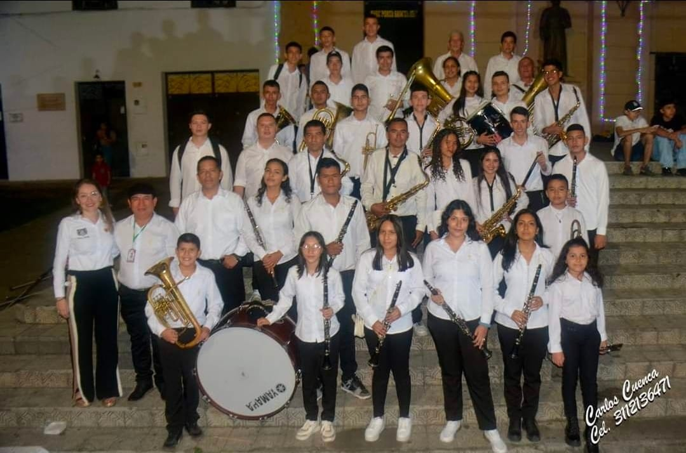

NUESTROS INSTRUMENTOS
Vientos de Madera
Aportan calidez, flexibilidad y agilidad melódica a las obras.
- Clarinete
- Flauta Traversa
Vientos de Metal
Brindan potencia, brillo y la fuerza majestuosa del sonido sinfónico.
- Trompeta
- Trombón
Percusión
El pulso y el ritmo que marcan la energía de cada interpretación.
- Timbales
- Bombo y Platillos
Cuerdas
Añaden profundidad emocional y elegancia a nuestro repertorio.
- Violín
- Violonchelo
Dato que probablemente no conocías
La Banda Sinfónica Municipal de Garzón es el pilar cultural de la "Capital Diocesana" del Huila. Con una trayectoria que nace de la tradición de las retretas del siglo XX, se ha consolidado como una institución esencial para la formación artística de la juventud garzoneña, fusionando la disciplina técnica con el sentimiento regional.
Es reconocida por su maestría en ritmos tradicionales como el bambuco y el pasillo, además de un amplio repertorio internacional y clásico. Funciona como una escuela de vida, permitiendo que niños y jóvenes se profesionalicen en la música de viento y percusión.
Participaciones constantes en el Concurso Nacional de Bandas de Paipa. Fue galardonada como una de las 10 mejores bandas del Huila, reafirmando su excelencia musical en el departamento. Bajo la dirección de maestros locales, continúa siendo el alma de las festividades en la Catedral de San Miguel y el parque principal, manteniendo vigente el patrimonio musical del municipio.
En Garzón, la música de banda es tan importante que se considera un patrimonio vivo. Si alguna vez tienes la oportunidad de verlos en un desfile o en una retreta, notarás que la conexión con el público es inmediata, pues interpretan la identidad misma del pueblo "Garzoneño".
NUESTRO ACTUAL MAESTRO

Nombre del Maestro
Director y Director SinfónicoLíder entregado a la formación de nuevos talentos, guiando con pasión la interpretación musical de nuestra banda e impulsando la preservación de las tradiciones de la región.
MAESTROS ANTERIORES
"Expresamos nuestra eterna gratitud a los maestros que marcaron nuestro camino. Su entrega, sabiduría y pasión encendieron la chispa musical en Garzón, dotando a nuestra banda de vida, luz e historia que perduran en cada nota."

Misael Sendoya Montalvo
Exdirector Musical
Domingo Sabio Betancourt Chavarro
Exdirector Musical
Ancizar Becerra Ortiz
Exdirector Musical¡SÉ PARTE DE NUESTRA FAMILIA MUSICAL! 🎵
La música no tiene edad ni fronteras. Hacemos una cordial invitación a niños, niñas, jóvenes y adultos a unirse a la Banda Sinfónica Municipal de Garzón.
Aquí encontrarás más que instrumentos y notas: descubrirás disciplina, pasión, grandes amistades y la oportunidad única de ser la voz cultural de nuestro pueblo. ¡El arte te espera con los brazos abiertos!
¡Quiero Unirme!